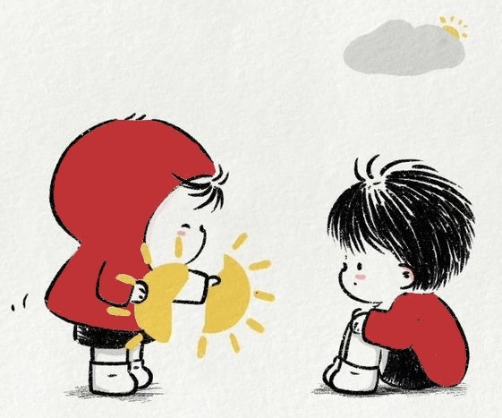

Addiction could be hard to overcome, especially if we cannot accept/ recognize that we are addicted to something. Addiction is a neuropsychological disorder that may be described as a persistent and intense urge to partake in behaviors such as drug-use, disregarding the harm it may bring or cause. Addiction may be caused by peer pressure, gender, race, family history, anxiety, stress, depression, coping with other mental health issues, greek life, curiosity, and/or academic validation. Learn More
It is important to recognize that all of the mental health issues students face we are trying to raise awareness on, are all linked within each other. We must realize and accept that what we are going through can only cause and bring greater problems if it goes unresolved or unmentioned. For some, it may be the norm to go through things alone, and/or not to express our feelings, but that’s what causes us students to suffer greatly, mentally, academically and physically. While professionals would suggest going to rehab, seeking treatment from a hospital and/counseling in order to overcome addiction, it is found that most individuals do not really make the effort to overcome the addiction, but make the effort to make it seem like they are for their loved ones/ those concerned. There are other ways to take steps to overcome addiction, which are developing healthy lifestyle behaviors such as taking the time to exercise daily, taking walks and taking interests in other activities, and finding a support person that understands what you are struggling with. It would also be helpful to learn and research about the type of addiction we are going through. Learn More
We have created this community in order to share experiences and meet others that share similar experiences while remaining anonymous. One of the most important things about going through this experience is to recognize that you are not alone, and you shouldn’t feel alone. And while we are well aware about the resources available to students on campus, we are not discouraging the use of these resources. We believe in creating a stronger community by bringing students together to communicate and share experiences with other fellow students. We also understand that sharing with another student instead of a professional and/or adult can be more comforting than intimidating, and that attending a university like Rutgers could also be very intimidating and lonely.
